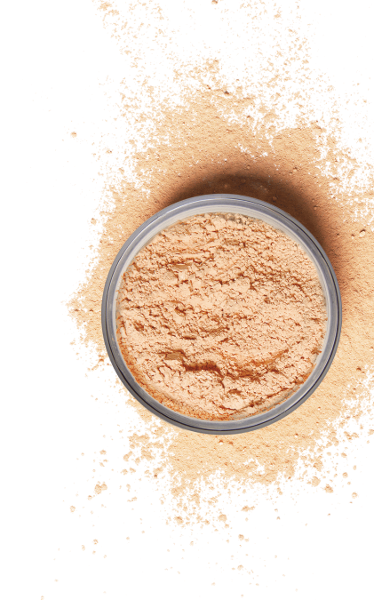
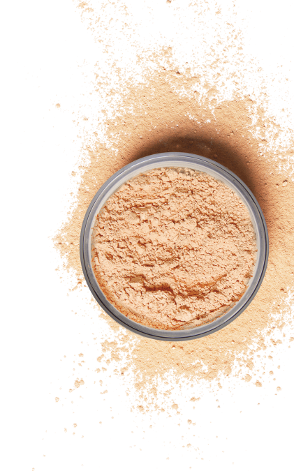

Dopo che ha perso 45 kg, Adele ha condiviso la sua nuova foto e ci ha raccontato il segreto del suo cambiamento.

Il 5 maggio, la famosa cantante e vincitrice di 15 Grammy, Oscar e Golden Globe ha festeggiato il suo 32° compleanno. Ultimamente, cantante rimaneva un po' nell'ombra e non aggiornava nemmeno troppo spesso il suo account Instagram. Tuttavia, recentemente ha contattato i social network per ringraziare le persone che hanno scritto i loro auguri di compleanno, insieme a una fotografia che ha fatto rimanere a bocca aperta i suoi fan.
Ecco come era Adele nel 2013, durante l'85° Premio Oscar annuale.

In quel periodo la cantante era anche molto carina e tutti si sono abituati alla sua immagine ma per sua confessione si sentiva molto a disagio in quel peso. All'inizio della sua carriera, l'artista pesava 132 kg, ma nel tempo è riuscita a perdere un po' di peso, ma sbarazzarsi da tutti chili in più lei non riusciva.
Nel 2019 dopo il divorzio di Simon Horse, Adele ha iniziato a perdere peso che i suoi fan subito iniziano a notare.
Per oggi la cantante si è completamente cambiata il suo nuovo aspetto possiamo notare da foto pubblicata per il suo 32° compleanno.
Ecco come è Adele ora:

Lei non solo è dimagrita tanto ma anche dimostra 10 anni di meno! I fan non hanno potuto fare a meno di notare la sua incredibile trasformazione e hanno iniziato a chiedere come la cantante sia riuscita a farlo in così poco tempo!
Adele non ha ignorato le domande dei suoi fan e ha risposto nel suo prossimo post. Ecco cosa ha scritto:
"Non ho mai avuto complessi su... peso in eccesso . Ma ho cominciato a notare che non mi sentivo bene, mi mancava il fiato e ho capito che dovevo cambiare qualcosa... Volevo restare in buona salute per mio figlio.
Ho iniziato con un allenamento intensivo in palestra, ho cambiato la mia dieta, ho rinunciato alle cattive abitudini che ha dato un piccolo effetto, ma non quello che mi aspettavo e soprattutto non ho raggiunto il risultato che volevo. ”
Più o meno nello stesso periodo Adele ha scoperto le gocce di Slimagic di cui abbiamo già parlato in dettaglio. SLIMAGIC è un concentrato naturale che brucia il grasso viscerale (profondo) e sottocutaneo, ha un effetto complesso sul corpo, ricco di vitamine e minerali. Il concentrato vegetale nutrisce il corpo di vitamine A, E, gruppo B, stimola la combustione attiva dei grassi senza danneggiare la salute. Elimina la formazione di cellulite su fianchi, addome e braccia già nella seconda settimana di applicazione. Prendendo queste gocce non morirai mai di fame. Si può anche bere vino rosso e mangiare cioccolato fondente e hanno un effetto positivo sul sistema nervoso.
L'anno scorso, una cantante che ha ottenuto un Grammy, è andata a fare un viaggio snellente con Slimagic e i risultati ottenuti hanno reso i suoi fan senza parole. Cantante è riuscita a perdere 45 kg in un paio di mesi e ora ha un aspetto fantastico!
Ecco cosa ha scritto nei suoi social network:
“ La cosa più importante quando dimagrisci è non far male al corpo. Purtroppo, i modi più popolari per perdere peso non possono vantarsi di questo. Non si può stare a dieta tutto il periodo di vita, e non tutti riescono a sopportarla. Non riuscendo a raggiungere l'obiettivo, la gente si rivolge alle pillole, la maggior parte delle quali non fa altro che deprimere il corpo, provocando disfunzioni nel corpo Il processo di dimagrimento deve essere naturale e non deve danneggiare i processi interni del corpo. Per oggi, Slimagic è l'unico mezzo per affrontare queste sfide. I microelementi attivi del rimedio provocano l'accelerazione del metabolismo e la combustione della massa grassa per almeno 10 volte. Sono convinta che questo farmaco è la cosa migliore nell'alimentazione moderna di oggi. E l'ho provato su me stessa e ho ottenuto risultati sorprendenti senza danneggiare il mio corpo. Credo che 45 kg in due mesi siano un successo!”
 Fonte: https://www.instagram.com/adele/
Ecco come è la cantante adesso
Fonte: https://www.instagram.com/adele/
Ecco come è la cantante adesso
“ Slimagic ho bevuto con un bicchiere d'acqua ogni mattina . E una settimana dopo sono rimasta piacevolmente sorpresa dai risultati. La mia energia era al massimo non ero né affamata né esausta dall'allenamento. Una settimana dopo mi sono pesata e ho visto che avevo perso 4 kg. Continuavo a bere gocce al mattino e facevo i miei allenamenti quotidiani mentre il mio peso andava via da solo. Nella quarta settimana quando mi sono pesata ero al settimo cielo in quanto il mio peso è sceso di 14 kg. . Dopo due mesi peso 45 chili in meno!! Sono molto contenta di poter condividere con voi le mie conquiste e ancora più contenta di potervi dire come le ho raggiunte. Siate sani, prendetevi cura di voi stessi e badate alla vostra salute", così Adele termina il suo post.
Slimagic è stato certificato in Italia e fino a quando non compare nelle farmacie, il modo più affidabile per acquistare questo prodotto è ordinarlo dal sito ufficiale del fornitore. Questo vi garantirà la sua qualità e vi salverà dalla contraffazione.
Per fare la domanda basta inserire il vostro nome cognome e recapito telefonico sul sito ufficiale del prodotto SLIMAGIC. e aspettare che il manager vi chiami per confermare l'ordine


Commenti
Mamma mia che brava, è cambiata in modo irriconoscibile!!! La amo.)
RispondereSono riuscito a perdere 31 kg Il mio peso era di 94 kg. Ricordo quanto fosse difficile all'inizio, tanti dubbi se funzionerà o meno e se sarà efficace o meno. È difficile quando non si è sostenuti, soprattutto quando il proprio peso è enorme, ma "SLIMAGIC" ha bruciato tutti i chili, non mi aspettavo tale risultato!
Ho già sentito parlare di queste gocce e ne ho anche ordinato ne sto usando solo una settimana, non ci crederete, ma per i primi 7 giorni ho perso 3 kg e ne sono rimasti solo 18! Posso farcela! Dovrei:)
RispondereDobbiamo provarci se Adele ci è riuscita!
RispondereSono scioccata!!!! È lei che non la riconosce più, vero?!
RispondereSì, sta mentendo su tutto, deve aver fatto qualche l'intervento. Non funziona, ho provato queste gocce. Sciocchezze e bugie.
RispondereCiao, Alice e grazie per il messaggio. Questa è una dichiarazione molto strana, in quanto il nostro prodotto ha tutti i brevetti e le certificazioni, ha superato i veri test. Dopo aver consultato i nostri specialisti ti consigliamo di controllare la tua dieta quotidiana. È possibile che tu hai iniziato inconsapevolmente mangiare di più? Allora la mancanza di progressi è comprensibile. Il farmaco aiuta, ma non lo vedi allo specchio? Grazie ancora per la risposta e buona giornata.
RispondereControllato, ho davvero iniziato a mangiare di più((((((
RispondereQuindi ti consigliamo di comprare di nuovo il farmaco, ma questa volta il corso completo.
RispondereGrazie, mi ha aiutato veramente.)
Sono riuscita a perdere peso anche io! Buona fortuna a tutti, forza tutti quelli che combattono il sovrappeso!
RispondereAnche come a Adele, mi ha aiutato molto. C'è un'enorme differenza tra ciò che era e ciò che è ora. Non mi aspettavo di perdere quasi 40 kg (37 kg finora) nei miei anni. Mi sento proprio bene! Una tale soluzione per persone come me è semplicemente perfetta! Raccomando decisamente SLIMAGIC! Ecco i miei risultati:
Prima di iniziare a prendere le gocce SLIMAGIC, pesavo 90 kg. Nella mia giovinezza ero sempre magro ma con l'età, pian piano è comparsa la pancia. A 35 anni ho capito che devo cambiare qualcosa con urgenza. Quasi un anno mi sono dedicato alla palestra, ma non sono riuscito a raggiungere la mia forma normale. Poi ho aggiunto "SLIMAGIC" alla mia dieta e in poche settimane mi sono trasformato nella persona che ricordo dalla mia giovinezza. Ora prendo cura del mio fisico quindi un paio di pacchetti di "SLIMAGIC" tengo sempre in riserva.
RispondereDopo il parto quando il peso è aumentato necessario agire urgentemente su un tapis roulant per qualche ora. Ma si dice che è molto dannoso per le articolazioni, perché essenzialmente sono i salti con peso e le articolazioni iniziano a farci male. Oppure come io assumere SLIMAGIC con cui è molto facile recuperare il fisico. È strano che non tutti sappiano di questo prodotto.
RispondereAnch'io ho usato quelle gocce. In un solo corso completo con "SLIMAGIC" ho perso quasi 30 chili, cambiamenti molto grandi, se non dire enormi. Beh, ovviamente non mi abbuffo con le torte, ma non mi limito a nient'altro. Voglio le patatine, mangio le patatine.
Il sito ufficiale del produttore è l'unico posto dove possibile acquistare "SLIMAGIC" nel nostro paese o si vende in diversi negozi online?
RispondereValeria, purtroppo sì, perché le farmacie stanno cercando di fare soldi sulla gente, noi cerchiamo di aiutarli con i loro problemi di salute, hanno rifiutato di mettere il prezzo del produttore, quindi dobbiamo vendere su Internet perché qui possiamo mettere il prezzo che è accettabile per tutti.
RispondereComunque sono scettica. E posso credere più al potere di un cocktail che a qualche goccia. Ma tutto quello che si fa per un bel fisico , lo ordino io.
RispondereBevo SLIMAGIC gia per molto tempo. Ho avuto anche problemi di peso, ma ora non ci penso nemmeno, mangio di tutto e se mi ingrasso ricomincio a bere e sto bene.
RispondereSONO UNA DI 97 KG. NON SO COME METTERLI VIA. NON VOGLIO CHE SIANO PIÙ DI 100. COSA DOVREI FARE? AIUTATEMI!!!!!!! POSSO TROVARLO ALLA FARMACIA SLIMAGIC??????
RispondereMatilde, beh, si può cercare naturalmente ma l'ho trovato solo sul sito ufficiale del produttore ed è più affidabile e si può anche capitare su qualche offerta.
RispondereBuongiorno Matilde. Al momento "SLIMAGIC" può essere acquistato solo sul nostro sito ufficiale.
Rispondere